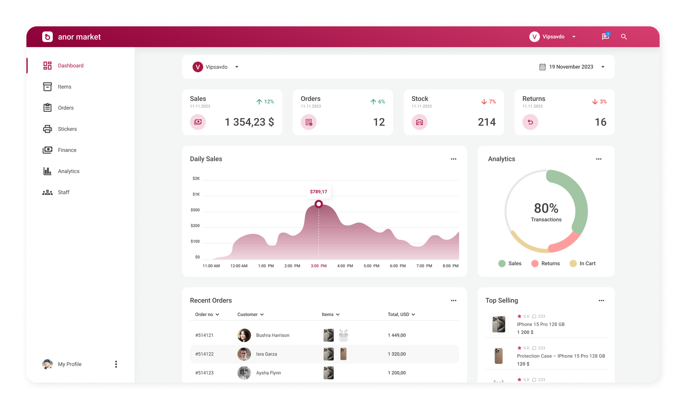
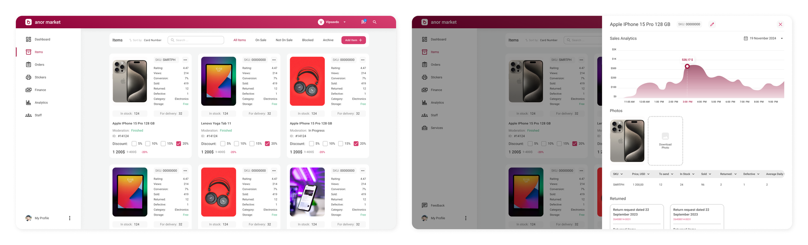
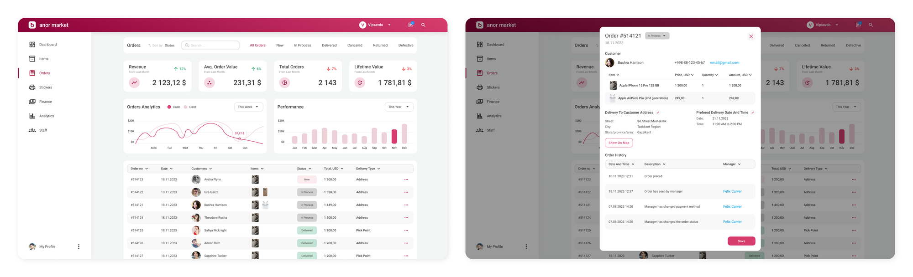
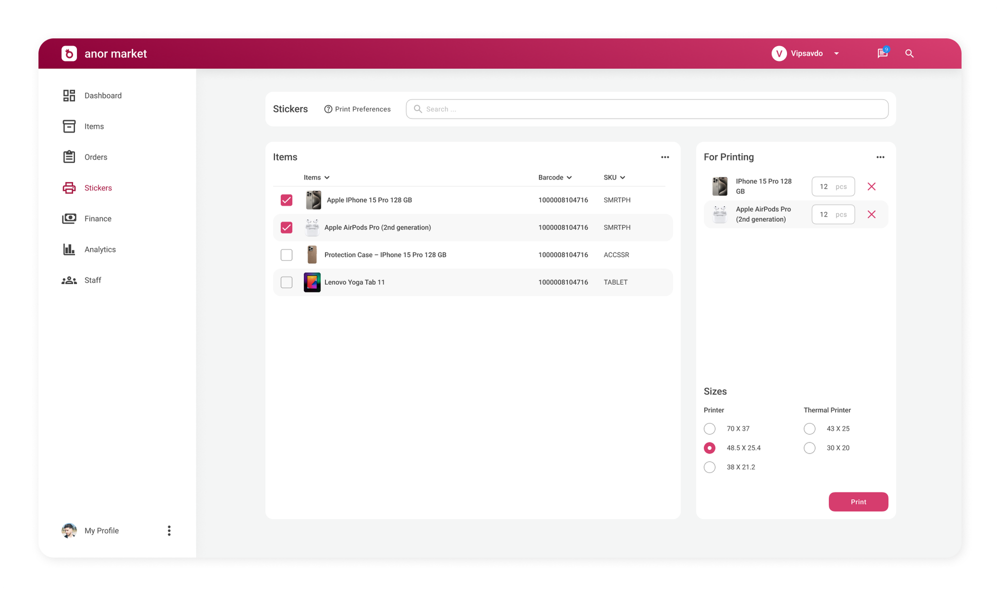
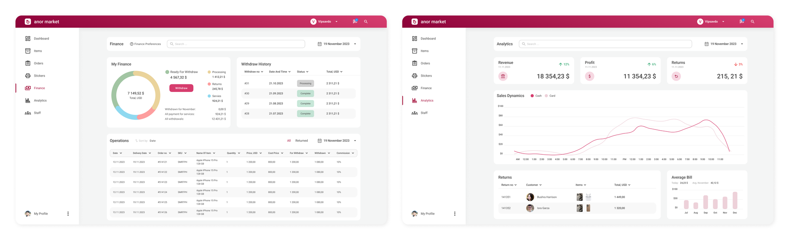
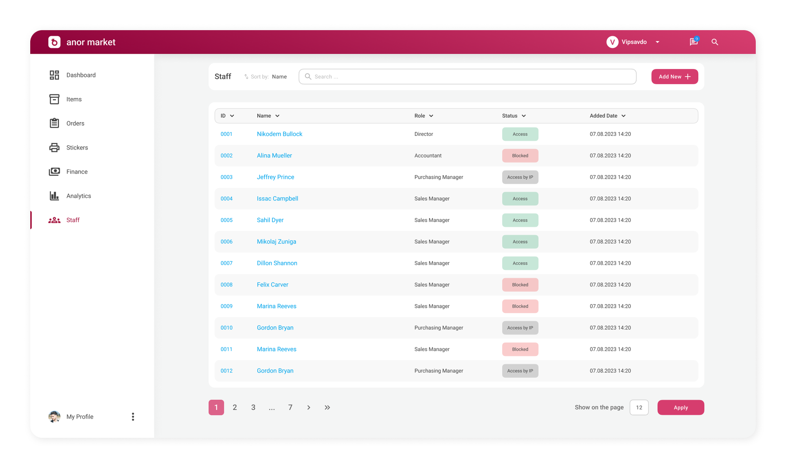

The e-commerce company in Uzbekistan, which offers a variety of products mainly in electronics category alined with the local market needs. It aimed to expand the operations and give sellers access to sell their products on the platform. This platform includes:
As a Junior UX/UI designer I was responsible for creating the logic and interfaces for the sellers’ personal accounts.
My main goal was to create an interface that is both user-friendly and meets the diverse requirements of online sellers. This involved understanding the specific needs of sellers, including how they manage their inventories and process orders. I aimed to ensure the platform was intuitive for users of all technical skill levels.
1. Designed the main screen of the sellers’ personal account, where I displayed all the most important information sales analytics for quick viewing.
2. Designed a screen for adding and changing product cards, with the possibility of quick viewing.
3. Implemented sorting, quick filtering, statistics of key financial and operational metrics.
4. Added an opportunity to generate stickers for sellers products using different templates for easy SKU identification.
5. Designed screens with detailed analytics and financial statistics, which helps sellers track their performance to make informed business decisions.
6. Designed a screen that allows admins to manage roles for their staff on their company account.
